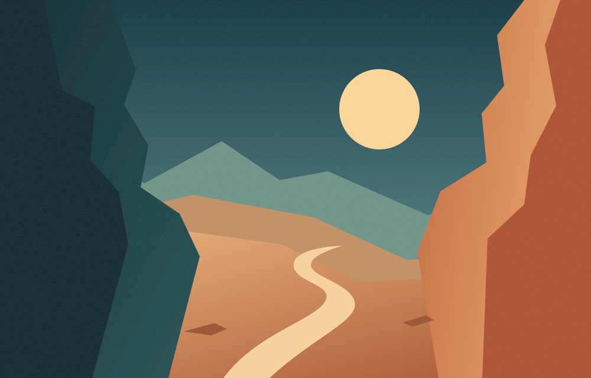
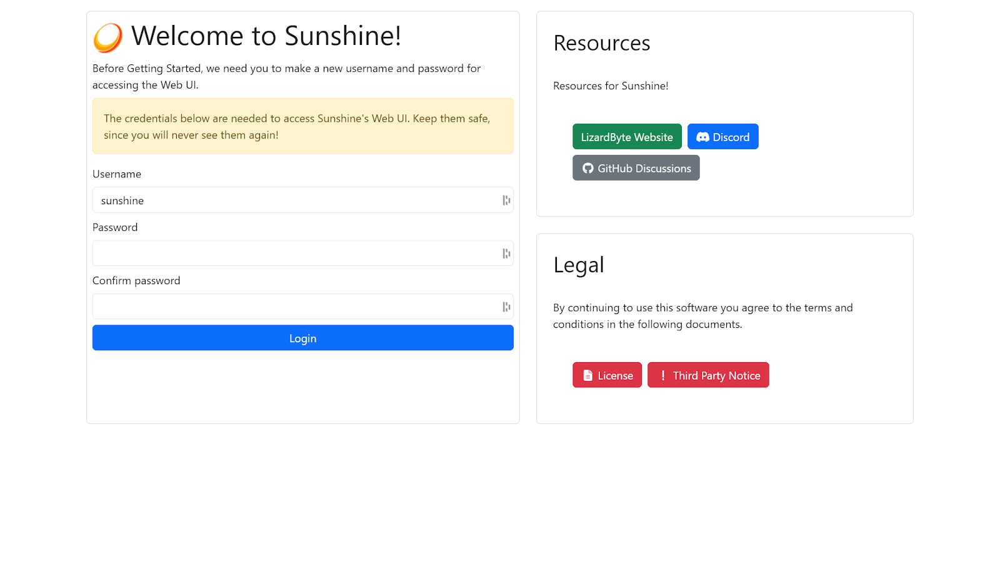

01 / PUT YOUR GPU TO WORK
Good hardware. Great company.
Use AMD, Intel, or NVIDIA hardware encoding to stream with low latency. Software encoding is there when you need it, too.
AMDintelNVIDIA
Check hardware and platform support YOUR HARDWARE. YOUR RULES.
Turn your PC into your own game streaming host. Sunshine does the heavy lifting. Moonlight brings it to the screen in front of you.
Free and open source No cloud subscription

Sunshine hostBUILT FOR THE WAY YOU PLAY
The games, the desktop, the hardware you already have. Sunshine gives them another place to go.
Explore the projectUse AMD, Intel, or NVIDIA hardware encoding to stream with low latency. Software encoding is there when you need it, too.
Sunshine supports Xbox, PlayStation, and Nintendo controller emulation. Bring your preferred controls to your Moonlight client.
Choose your applications, adjust your streaming settings, and pair your devices through Sunshine’s browser-based interface. It runs on your hardware.
A LITTLE SETUP. A LOT OF FREEDOM.
Install the host on the computer that runs your games.
Install a client on your laptop, phone, TV, or handheld.
Pair your client with Sunshine, choose an application, and start streaming.

Create your web interface account to get started.
SUNSHINE HOSTS. MOONLIGHT PLAYS.
From a desktop to the sofa. Choose a Moonlight client for the device you want to play on.
Moonlight PC for Windows, macOS, and Linux.
Get Moonlight PC TAKE THE SMALL SCREEN.Moonlight for Android phones, tablets, and TVs.
Get Moonlight for Android YOUR APPLE SCREENS.Moonlight iOS/tvOS brings your PC to your Apple devices.
Get Moonlight iOS/tvOSExplore community ports and other clients. Platform support and installation requirements vary by project.
Client listings are maintained in the LizardByte app directory. Moonlight is a separate open-source project.
READY WHEN YOU ARE
Install Sunshine on your host computer.
Then bring a Moonlight client along for the ride.
Install Sunshine on your Windows host.
Get Windows buildsFind a package for your distribution.
Get Linux buildsDownload the DMG package for your Mac.
Get macOS DMGsGet the package for your FreeBSD host.
Get FreeBSD packagesHardware and operating-system requirements vary. Check the documentation before installing.
SUPPORT THE PROJECT
Sunshine is free and open source. Buying a libvirtualhid license is the best way to support Sunshine and its ongoing development through LizardByte. It unlocks full controller support on Windows and macOS. Donations are welcome, too.
Sunshine is the host: it runs on the PC with your games and applications. Moonlight is the client: it runs on the device you stream to. You use both, pairing the client with your Sunshine host.
No. Sunshine supports hardware encoding with AMD, Intel, and NVIDIA GPUs, as well as software encoding. Support depends on your hardware and host operating system; consult the documentation for the details.
No. Sunshine is free, open-source software that runs on your own hardware. You provide the host computer and the games or applications you want to stream.
Start by pairing your devices on the same network. Streaming over the internet needs additional network configuration. Follow the official documentation to configure your setup.